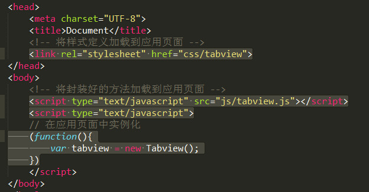
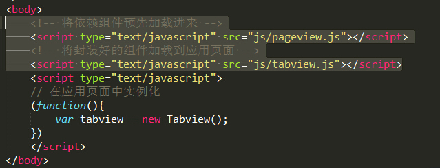
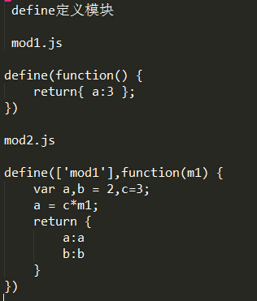

-
最近看了一名叫阿当老师讲解了一些关于javascript在实战中的分层方法以及一些注意事项，在这里小木来对其中的内容知识做些整理并分享给大家
-
js在实战中分层方法
js在实战中的分层方法主要分为四个方面，分别是：应用层，框架组件，框架core以及浏览器底层，而其中的框架组件也被分为通用组件和定制组件，一般来说，应用层和定制组件是由公司的写应用的工程师负责的，而框架通用组件和框架core是由开发框架的工程是来完成的。
-
组件的分类
组件分为框架组件，独立组件和定制组件这三类
其中框架组件和独立组件有第三方提供；而定制组件一般由工程师在项目中发现重用模块并且将他们抽象出来开发出定制组件，然后在自己的项目中高度重用。
所谓的框架组件就是提供一些简单的控件：例如input,text,checkbox,redio,select等，也有未提供的控件：例如日历选择器和富文本编辑器等。
-
关于浏览器的底层的一些问题
接触过js的童靴都应该知道在js中，并没有像其他编程语言那样对数据类型作独立的声明（例如int,string,double等数据类型包括创建对象等），一般我们都是直接var a = ...。小木觉得造就这些的主要原因是javascript的开发周期短，对一些语法层面的问题没有得到很好的完善，这便出现了js核心语法层面薄弱，js原生API不好用以及浏览器的兼容性问题（兼容性的问题主要是针对IE9之前版本的浏览器，原因是IE8，IE7，IE6等版本，微软采用了和W3C不同属性方法的规范）
-
组件开发（组件的定义和加载）
最简单的定义方式（举例：Tabview组件）
应用层的加载
上面的例子是单个组件的开发，有时候会出现多个组件并且组件间存在依赖关系，此时需要注意的事项是：在组件文件引入之前应该将依赖的组件先加载进来
此外还会存在一些问题：
（1）需要手动处理组件间的依赖关系
（2）加载的项太多，破坏页面的整洁度
针对以上问题的解决方法是：模块化和require.js
